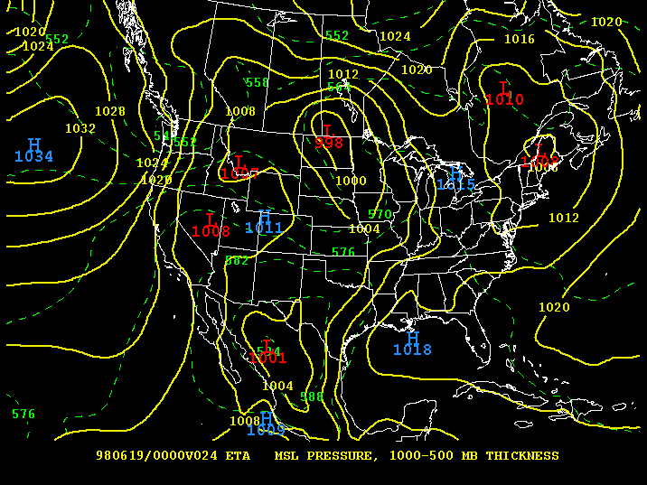

Eta Model Help Page
The Eta is a computer model used by the National Weather Service to help in 1-2 day forecasting. Most universities receive the Eta charts twice a
day, at 00Z and 12Z with output every 6 hours for the following 48 hour period. To read which hour the model is valid for, look at the bottom of the map
for the time stamp. It should look something like this:
980619/0000v024
This can be read as follows: The map is valid for
June 19, 1998 at 00Z and is forecasted 24 hours from the intial time (model run started at 00Z June 18 for this example).
